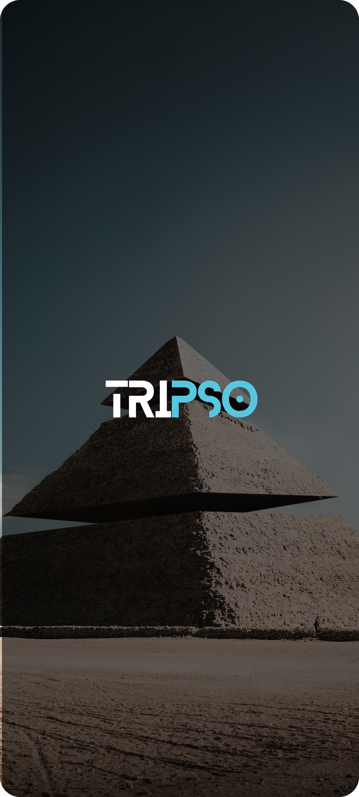
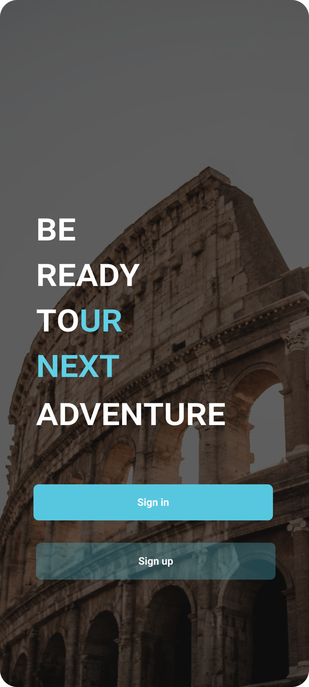
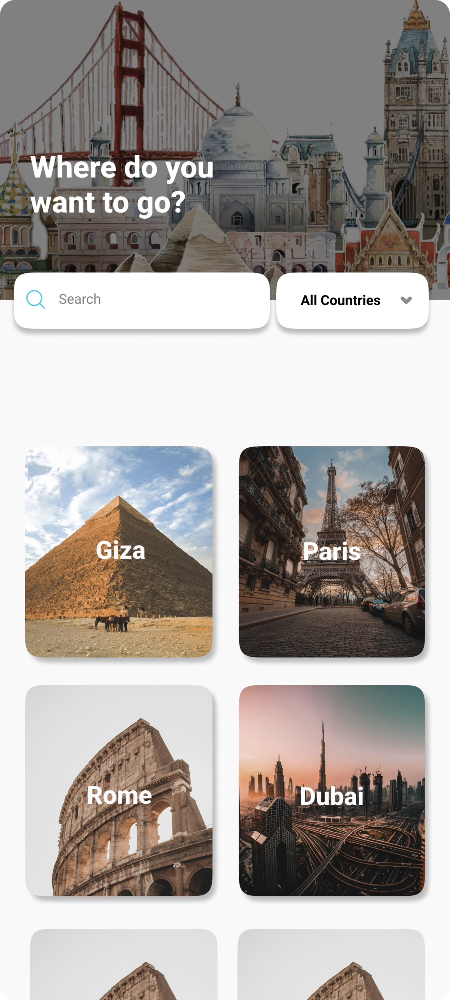
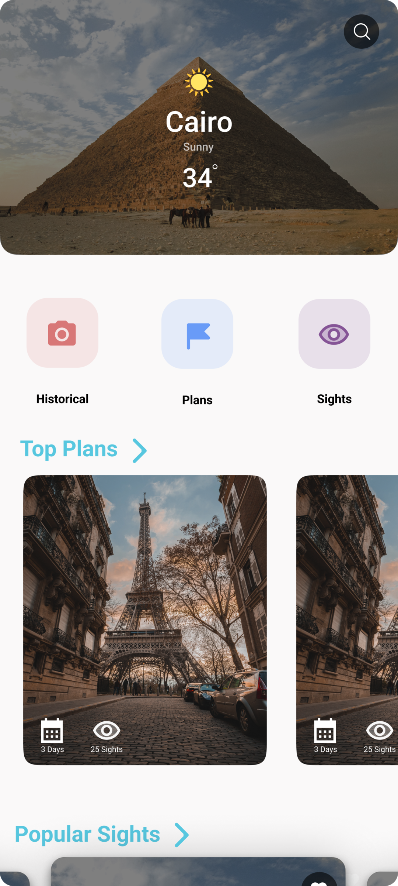
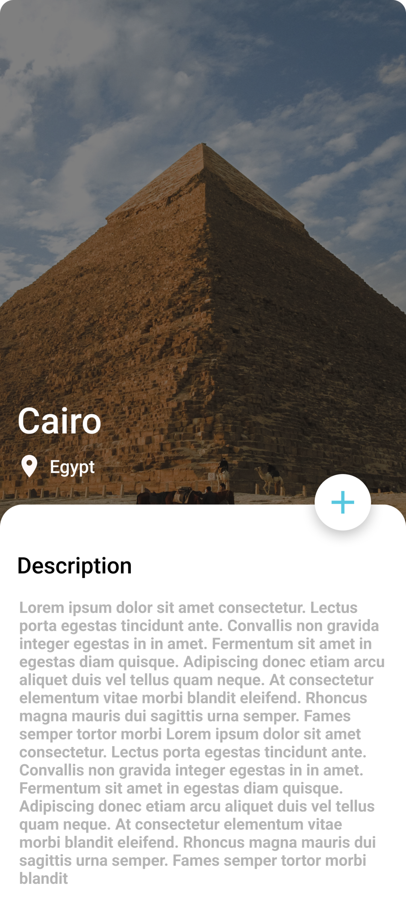
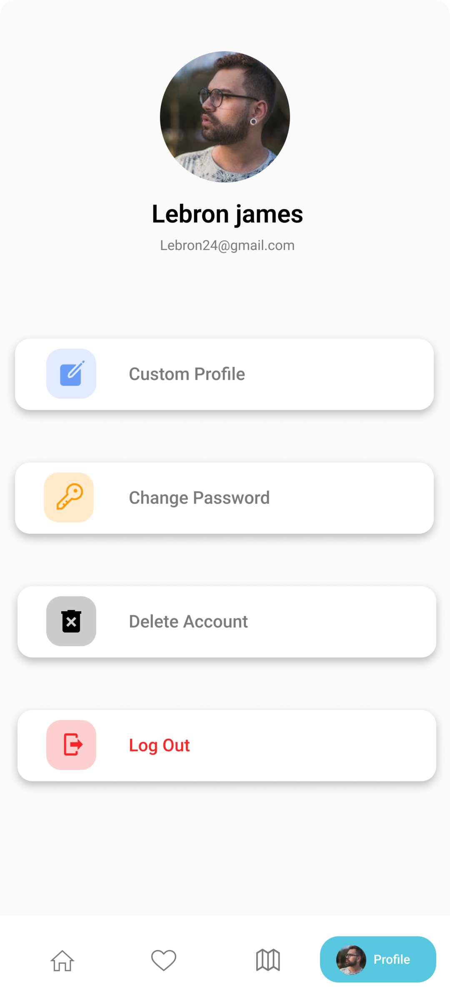

Tripso is a Flutter travel-planning app for people who want to build their own day-by-day itinerary instead of booking a fixed package tour. Users browse curated cities across Egypt, Italy, France and the UAE, read and listen to the history of each landmark, save places to a wishlist, then pick a date range and assign sights to each day of the trip. Everything — accounts, cities, places, wishlists and itineraries — is backed by Firebase, with live weather pulled from WeatherAPI, so plans stay in sync across sessions and devices. It was Hussein's graduation project, and the first full app where Cubit state management and Firebase auth were put into practice end to end.
Pick a start and end date and the app generates one slot per day, letting you assign sights to Day 1, Day 2 and so on, stored per user in Firestore.
Browse cities filtered by country (Egypt, Italy, France, UAE) or by a 'Popular' flag, then drill into individual places with photos, ratings, ticket info and best time of day.
Save and remove places to a personal wishlist scoped to both the user and the city, kept in sync through live Firestore listeners.
Any city or landmark history can be read aloud through flutter_tts, so travellers can listen while walking instead of reading.
Selecting a city fetches a seven-day forecast from WeatherAPI, so trip planning accounts for real conditions.
Email/password sign-up and sign-in, password reset by email, in-app password change, and full account deletion.
Each city ships with pre-built plans, so users can start from a ready-made route instead of an empty itinerary.
Each place stores a map link that opens directly in the device's native maps app.
Users update their avatar with built-in pick and crop tools, uploaded straight to Firebase Storage.
The splash screen checks for a real network connection and re-prompts until the device is genuinely online.
Tripso is organised by layer rather than by feature: screens per area (explore, plans, sights, profile, wishlist, auth, onboarding), a tabbed shell layout, Firestore-backed data models, and a shared layer for cubits, providers, services and reusable widgets.
State management is Cubit-based via flutter_bloc — not plain Bloc, not HydratedBloc. One application-wide TripsoCubit owns most of it: tab index, user profile, city and place queries, wishlist and itinerary writes. Three smaller cubits isolate the auth flows (sign in, sign up, reset password). Weather deliberately runs on a separate track — a plain ChangeNotifier fed by a REST weather service — so the app genuinely mixes Provider and BLoC rather than using one exclusively. Session state is a cached user ID read from local storage before the app even starts, which decides whether the splash screen lands on the city list or the onboarding flow.






The app was originally written against an older Dart and Firebase toolchain and sat untouched for most of 2024. A major migration commit moved the SDK constraint forward and jumped every Firebase package, flutter_bloc, http, image_picker and image_cropper to their current major versions. The real work was in the fallout: 13 "if not mounted, return" guards were added at async gaps (a weather fetch before navigation, account deletion, sign-in/sign-up), provider lookups were hoisted above their awaits so they're resolved while the context is still valid, and 22 calls to a deprecated opacity API were replaced with a small extension built on the modern equivalent.
The project originally leaned on a platform-widgets package to render Material or Cupertino chrome depending on OS. That dependency was removed and replaced with a small, purpose-built adaptive layer that branches on the operating system and returns the right native-feeling spinner or alert dialog for Android vs iOS. That ~200-line layer is still what the shipped app uses for every loading indicator and dialog today.